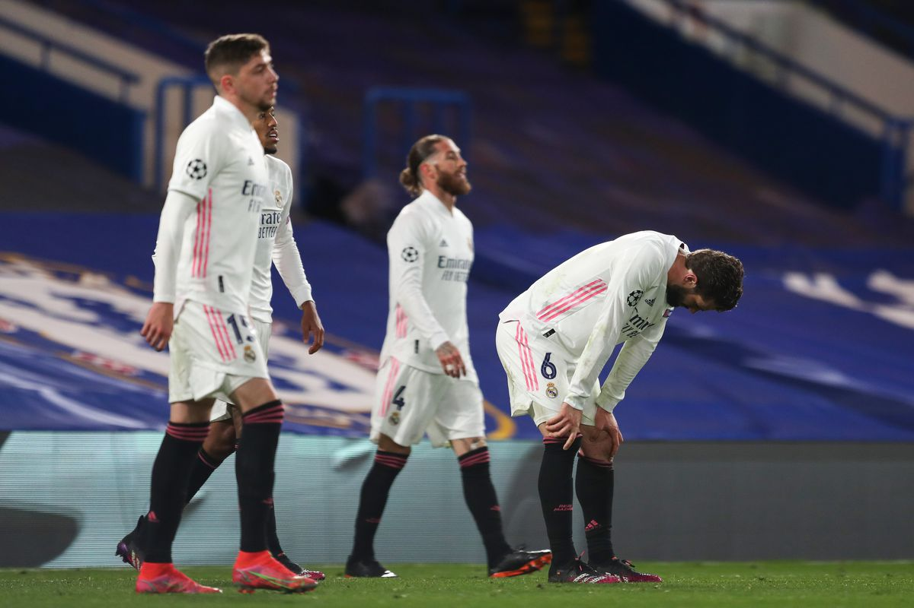
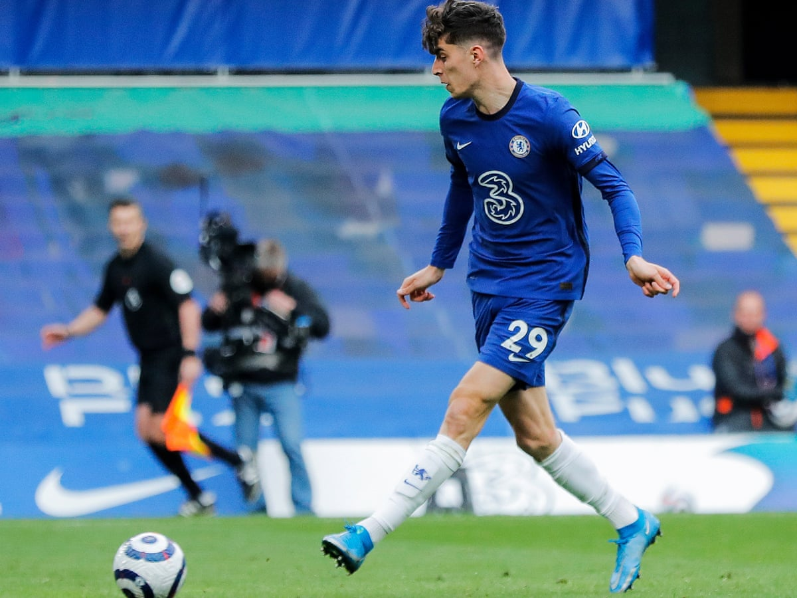

Final Score: Chelsea 2-0 Real Madrid (3-1 Aggregate)
With a spot in the Champions League Final on the line, another tight game was expected in the second leg between Chelsea and Real Madrid. Chelsea came in with the advantage having scored an away goal last week, but just one goal from Real Madrid would make things all square (and perhaps see them through). That goal never came, and after a goal from Timo Werner around the half an hour mark, Chelsea took control and dominated their way to their third ever Champions League Final appearance. Here are five key takeaways from the match:
1. For Chelsea, Less is More
Chelsea did not need to create much in this game. A 0-0 draw would have sufficed given the away goal they scored last week. So the gameplan was simple: minimize high-percentage shots by Real Madrid, control the game, and take the big chance when it comes. Chelsea didn’t create a ton in this one, but they did have a few promising looks, the best of which was a wide open header from a yard out into an open goal. Timo Werner finished it off, and Chelsea was able to see out the final hour comfortably — adding one more with five minutes to go. Real Madrid never really got their act together, looking disjointed in the final third and relying on the brilliance of Karim Benzema to create their best chances of the game. The reintroduction of former Chelsea player Eden Hazard and captain Sergio Ramos didn’t do much to help Real Madrid in this one. Chelsea didn’t need much to get through to the final, and they used that to their advantage in their gameplan.
2. For Real Madrid, The Time For A Full Rebuild Is Now
If we are being honest, the full rebuild should have begun in Madrid the moment Cristiano Ronaldo was sold. But, those at the top tend to try and hold on to their place way longer than they should, and it makes getting back to that point much more difficult. Real Madrid have signed a few young, hot prospects in the last couple of seasons. However, the majority of the current core is made up of players left over from the Ronaldo era. Nine of twelve top minute getters for Madrid are over 28 and five of those are over 31 (and the roster has a similar makeup further down). We can already see the performances of the older players starting to drop off, and offloading as much as they can and revamping around a younger core will help immensely in getting Madrid back to the top. The longer they stick with the older core, the harder it will be to get back to the top — just look at what’s happening with Barcelona. The sooner a full rebuild goes into effect, the better for those at the Bernabeu.

3. Kai Havertz At Center-Forward Works
His finishing could use some work, but Kai Havertz could be an excellent option up front going forward for Thomas Tuchel’s side. This is no surprise to anyone who watched him in the second half of the season at Bayer Leverkusen last season, but it’s amazing that it took this long for Chelsea to realize that the role he played in for his best form last season might be the best way to get him working in his new surroundings. Havertz size and speed make him a threat on the counterattack, his technical abilities make him a threat dropping deep in possession play, and his positioning and off-ball movement makes him a great penalty box threat (and are a big reason he scored 25 non-penalty goals over the previous two seasons). By surrounding him with other goal threats like Christian Pulisic or Timo Werner, it could allow Havertz to focus on an all-around forward role (maybe in a similar vein to Roberto Firmino) and reach his full potential.

4. N’Golo Kante Is The Heart Of Chelsea
When Kante is playing well, this Chelsea team is difficult to stop. He brings so much energy to the team that even if he isn’t playing at his best technically, he is vital to the team’s success. But today you saw Kante at the top of his game in all aspects. He was everywhere on the field, constantly harassing Madrid players. He was winning high turnovers that led to scoring opportunities for Chelsea. He was creating chances for his teammates on the counterattack. He was excellent in every aspect of the game against Real Madrid, and he’ll continue to be a big part of the team as they push for a top four spot in the Premier League, the FA Cup, and the Champions League title.
5. The Final Awaits
A second all-English final in three years awaits us at the end of May as Chelsea is now locked in to play Manchester City (who defeated Paris Saint-Germain in the other semifinal). This is Manchester City’s first ever appearance at this stage in the competition, and they are finally looking to win the one thing they haven’t been able to achieve since Sheikh Mansour took over in 2008. Chelsea on the other hand have reached their third ever final, and are looking to win the competition for the second time. These two teams play very similar possession-dominating styles at the moment, and it should be a tight, tension-filled affair. I’m going to give the edge to Manchester City at the moment, but don’t be surprised if Chelsea pull off the upset.